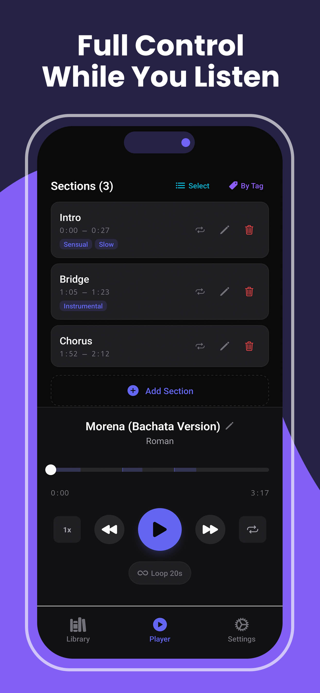
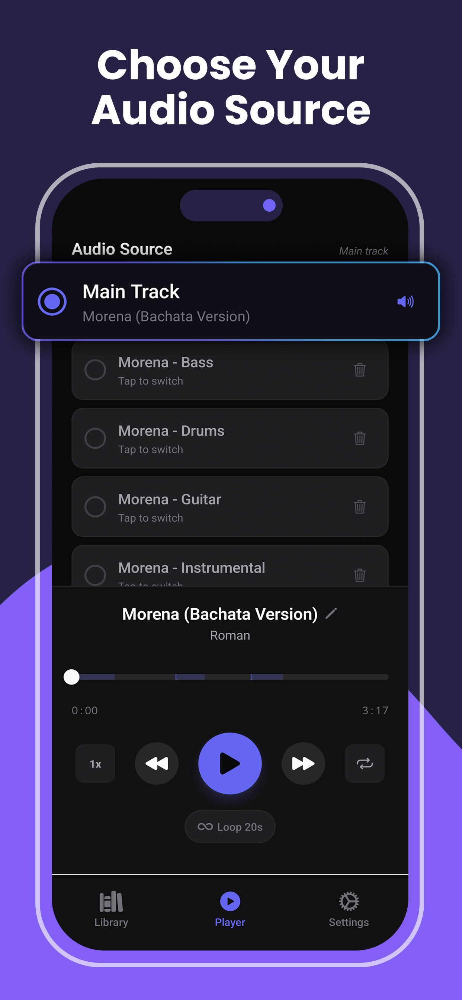
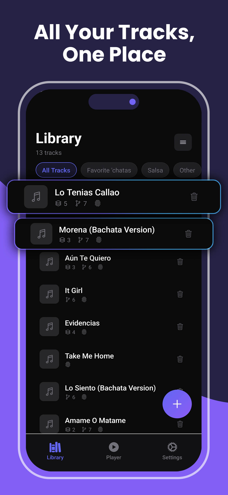
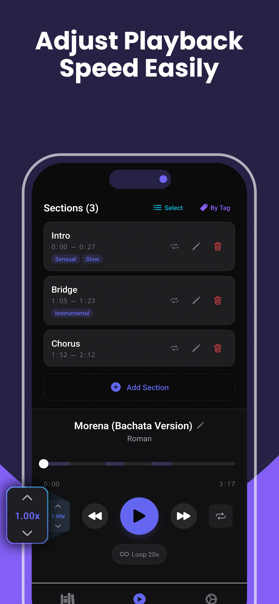
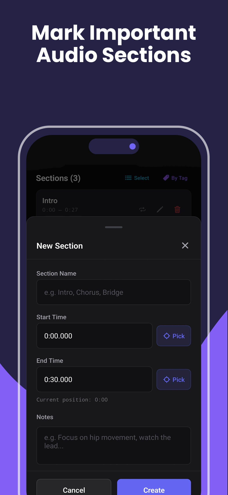
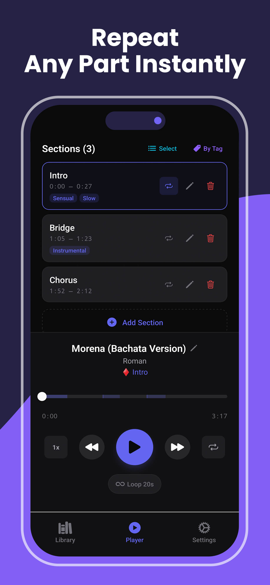
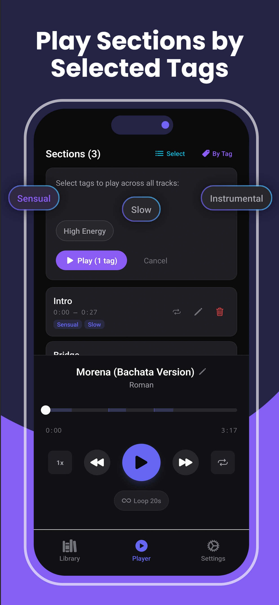
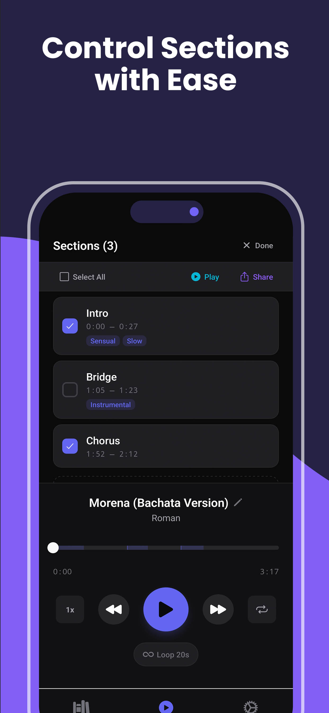
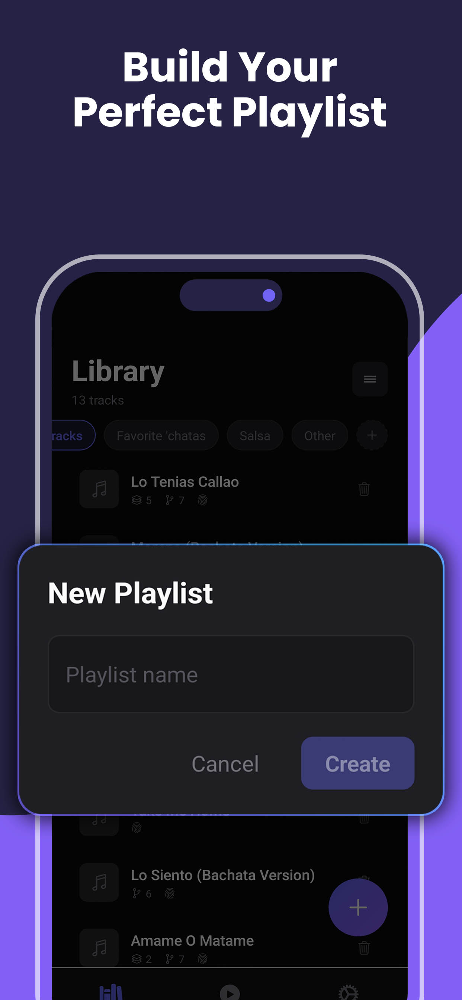

No system for practice
You go to class, you go to socials — but when you practice on your own, it's just hitting play and freestyling. There's no structure, no targeting, no reps on the parts that actually need work.
Break songs into moments. Loop what matters. Slow it down. Speed it up. Train musicality with intention — for any dance style.

Show Me the Counts (SMTC) is a free mobile app for dancers that turns any song into a structured practice tool. Import music from your library, mark and name specific sections, loop them on repeat, adjust playback speed from 50% to 150%, and isolate individual instruments using AI-powered stem separation. Built for bachata, salsa, kizomba, zouk, and any dance style. Available now on Google Play for Android and the App Store for iOS.
I started out like everyone else. I wanted to learn the cool moves. I wanted to feel confident. I wanted to look good and dance effortlessly. And I wanted all of that today — not years later.
So I did what any sane, rational person would do. I took as many classes as I could. Went to every social I could, including the pre-social classes. Took private lessons. Watched videos of others on social media. Went to festivals and weekenders. Eventually joined a performance team.
I was doing everything. And I was getting better — slowly. But something fundamental was still missing.
It took me years to figure out one key lesson: the moves and combos you know only play a small part in what makes someone a "good" dancer.
How and when you use those moves during a song matter more. It's why professionals can make a dance look incredible with "basic" or simple moves. They're not doing more — they're doing the right thing at the right time.
Knowing that is half the battle. The other half is being able to do it. And for that, you need to practice.
Except — practice how?
Anyone can open up Spotify or YouTube and just dance to a song. That works for some people. But music is patterns, and patterns repeat. You hear the same structures in the same song and across songs. To recognize those patterns — to react smoothly, to move with intention — you need repetitions. Focused, targeted repetitions on the parts that actually matter.
I couldn't find a tool that let me do that. So I built one.
See How It Works →You go to class, you go to socials — but when you practice on your own, it's just hitting play and freestyling. There's no structure, no targeting, no reps on the parts that actually need work.
Music is full of repeating structures — accents, breaks, builds. You can feel them sometimes, but you can't consistently recognize and react to them. That takes focused repetition.
You know plenty of moves. But knowing when to use them — matching movement to the music in real time — is a completely different skill. And most tools weren't built for that.
Import music you already train with — bachata, salsa, kizomba, zouk, whatever your style. Your songs, your practice.
Create named sections for specific parts — the intro buildup, the accent you keep missing, the transition where the energy shifts.
Loop any section on repeat. Slow it to 60% to understand the feel. Speed it to 110% to build sharpness. Repeat until it's second nature.
Bring out specific layers of the music — focus on the bass line driving the rhythm, the congas setting the groove, or the vocals guiding the melody. Train your ear to hear what your body should follow.









Mark, name, and color-code any part of a song. Jump between sections instantly.
Loop any section seamlessly. No fumbling with a progress bar — just focused reps.
Slow down to learn. Speed up to challenge yourself. Fine-tune from 50% to 150%.
Isolate vocals, bass, drums, or melody from any track. Hear the exact layer that matters most for what you're practicing.
Share specific sections with other dancers or students. Send the exact moment in a song that needs attention — no timestamps, no guessing.
Designed for the studio floor. Quick access, one-thumb controls, works offline with your music library.
Core features like section creation, looping, and speed control are free. Upgrade to SMTC Pro for stem separation, unlimited sections, custom tags, section sharing, and more. Start with a 7-day free trial.
Train musicality, timing, and control so the dance floor feels effortless — not rushed or reactive.
Develop cleaner accents, deeper groove awareness, and intentional movement choices.
Break down music once, drill key moments, and clean routines without wasting studio time.
Prep class music in advance, mark teaching moments, and build a library of annotated songs for your curriculum.
A break hits in a song and catches you off guard. You scramble to adjust, and the moment passes before you can react.
You drilled a section where the guitar builds and the percussion drops out — you know that pattern now. A different song does the same thing at a social, and your body is already there.
Practice means playing a full song start to finish and hoping something sticks.
Practice means 15 focused minutes on the exact 8-count where you want to be sharper. Targeted reps, not full run-throughs.
You watch a pro dance to a song you know and it looks effortless — but you can't figure out what they're hearing that you're not.
You've trained your ear on individual instruments. You recognize the patterns across songs and move with them — not a beat behind, but right on time.
Show Me the Counts (SMTC) is a mobile app designed for dancers who want to practice with intention. It lets you import your own music, mark specific sections of a song, loop those sections on repeat, adjust playback speed, and isolate individual instruments — so you can drill the exact musical moments that matter for your dancing.
Any style. SMTC works with your music library, so whether you dance bachata, salsa, kizomba, zouk, hip-hop, contemporary, or anything else, you can import your tracks and practice with them. The app is style-agnostic — it's about your relationship with the music.
Yes. Core features including section creation, looping, and speed control are completely free. SMTC Pro unlocks additional features like stem separation, unlimited sections per track, custom tags, and section sharing. Pro includes a 7-day free trial.
Stem separation uses AI to isolate individual layers of a song — vocals, bass, drums, or melody — so you can hear and train with just the musical element that matters most. For example, isolate the congas to focus on rhythmic timing, or bring out the vocals to follow melodic phrasing.
Yes! SMTC is available on both iPhone (App Store) and Android (Google Play). Download it for free on either platform.
Regular music players are built for listening. SMTC is built for practice. It lets you mark specific sections by name, loop any section seamlessly, adjust playback speed without losing audio quality, and isolate individual instruments — features designed specifically for deliberate, targeted repetition of musical moments.
Yes. With SMTC Pro, you can share specific sections so other dancers can practice the exact same musical moment — no timestamps or guessing required. Great for instructors sharing with students or dance partners coordinating practice.
Free to download. Core features included. Upgrade to Pro when you're ready to go deeper.